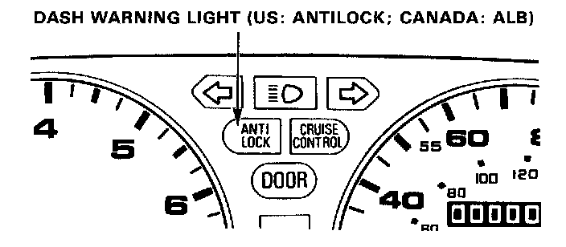

Initial Inspection and Diagnostic Overview

Troubleshooting Dash Warning Light
Dash warning light (US: ANTILOCK; CANADA: ALB)
Temporary Driving Conditions:
1. The dash warning light will come on and the control unit memorizes the problem under certain conditions.
NOTE: Problem codes explained. DTC List - Antilock Brake System
- The tire(s) adhesion is lost due to excessive cornering speed.
Problem codes: 5, 5-4, 5-8.
- The vehicle loses traction when starting from a stuck condition on a muddy, snowy, or sandy road.
Problem code: 4.
- When the parking brake is applied for more than 30 seconds while the vehicle is being driven.
Problem code: 2.
- The vehicle is driven on extremely rough road.
The ALB system is OK, if the dash warning light: goes off after the engine is restarted.
2. If you receive a customer's report that the dash warning light. sometimes comes on, check the system using the ALB checker to confirm whether there is any trouble in the system. Component Tests and General Diagnostics
3. The dash warning light will come on and the LED will display a problem code when there is insufficient battery voltage to the control unit. An example would be when the battery is so weak that the car must be jump-started.
After the battery is sufficiently recharged, the dash warning light will work normally after the engine is stopped and restarted.
However, after recharging the battery, the LED problem code must be cleared from the control unit's memory by disconnecting the ALB B2 fuse for at least 3 seconds.